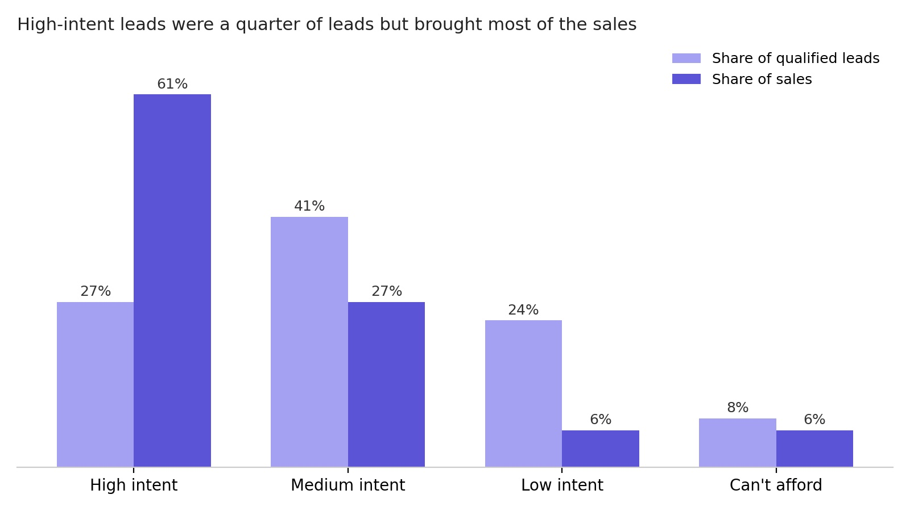
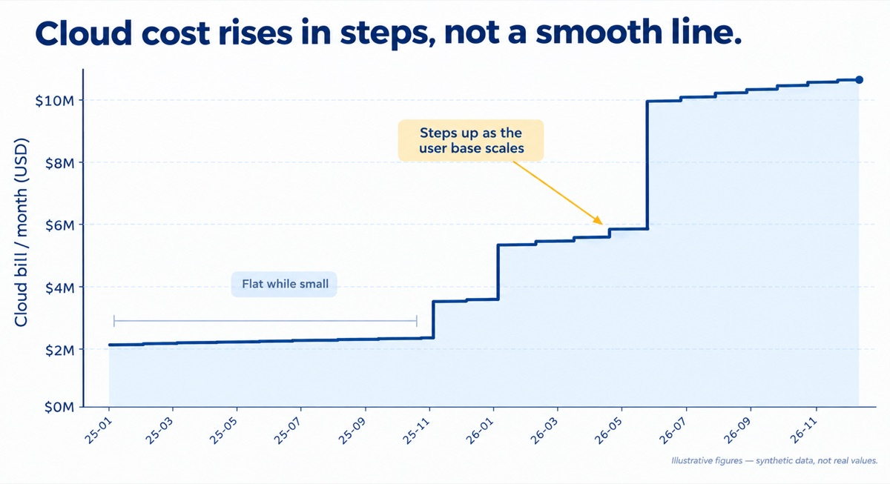

Data Analyst
who drives decisions.
My work spans the full data stack, from building pipelines and financial models to the analysis that product, growth and revenue teams act on.
Question
Understand the problem before touching the data.
Data
Pull, clean and sanity‑check the data.
Insight
Find patterns and explain why they happen.
Decision
Share what to do next, then check it worked.
About
I studied Software Engineering at NED University of Engineering & Technology and graduated third in my batch with a 3.88 CGPA. At university, the projects I liked most were the ones with data in them, so moving into analytics after graduating felt natural. I’m most at home working between the business and the tech.
AI has changed my day-to-day more than any tool before it. I use it to write code, explore data and get through routine tasks, so I can take on a much wider range of projects and keep my own time for the parts that need real thought. Usually those start with messy data and a question nobody has answered yet, which is exactly what I enjoy.
I value people who care about the details and are willing to change their mind when the data says to.
Experience
-
October 2025 – Present
Lead Data Analyst Maqsad
- Built the financial model for the company’s acquisition by Pakistan’s largest telecom operator, covering 8 product lines and projecting 4.7× lead growth and 10× revenue growth by FY29.
- Developed the operating model linking marketing spend, leads, sales, revenue and contribution margin across 5 product lines; informed decisions that lifted test-prep margin from 11% to 70% and cut lead costs by ~40%.
- Built a rule-based lead classifier with Claude Code that sorted 28K+ chat leads by intent, contributing to a rise in conversion from 1% to 4% over four months.
- Analysed 26.7K leads and found a segment converting nearly 4× more often; worked with marketing to restructure campaigns and shift spend toward it.
- Designed a lead-scoring model from mobile and web behaviour, validated on 10K users, that filters out 60–70% of low-intent leads and builds a warm lead pool for peak season.
- Set up and owned app install attribution with the mobile and backend teams, contributing to a 6% lift in conversion.
-
March 2024 – September 2025
Senior Data Analyst Maqsad
- Rebuilt Spark ETL pipelines with incremental Iceberg MERGE loads, cutting query time by 25% and daily pipeline costs by 40%.
- Built a real-time Kafka and Mage AI pipeline that surfaces high-intent student actions to sales within seconds, cutting lead response time by 80%.
- Implemented Medallion architecture in dbt (Bronze, Silver, Gold), giving teams clean data to query directly and cutting ad-hoc data requests by 30%.
- Analysed usage of 4M+ users to set the free-tier limit for a core paid feature, contributing to a 2% relative lift in free-to-paid conversion.
- Managed two junior analysts: reviewed their SQL and analysis, prioritised team requests, and trained them on dbt and the pipeline stack.
- Primary analytics partner for product, growth and marketing: ran in-app experiments and turned business questions into analysis, reports and dashboards.
-
February 2023 – February 2024
Data Analyst Maqsad
- Led North Star Metric analysis on weekly activity: consistently active users were 5× more likely to convert; focusing on early engagement helped double 7-day retention.
- Audited coin balances across 4M+ users and flagged 15K accounts with excess rewards from leaky rules; the fix contributed to a 3× rise in net revenue.
- Mapped the install-to-purchase funnel for test-prep users to find the features that drive purchases, contributing to a 5% increase in conversion.
- Traced 24.1% of 329K+ unviewed videos to poor search matching and worked with engineering to bring it down to 16%.
-
January 2022 – January 2023
Financial Data Analyst iSystematic, Inc.
- Built an Excel-based trading algorithm using predictive models and sentiment indicators, improving signal precision by 15%.
- Tracked investor activity across 1,500+ US equities: changes in shareholding, portfolio allocations and investment values.
- Ran fundamental, technical and backtesting analysis of US and ASX 200 equities across 1990–2021 market downturns.
Problems I’ve worked through

Lead Classification from Sales Chats
Hundreds of sales chats a day and no quick way to spot serious buyers. I built rules that sort each chat by buying intent, so agents call the right students first.
Read case study →
Cloud Cost Forecasting
Forecasting cloud costs as a business scales. The bill didn’t follow demand, so I modelled it in capacity steps instead.
Read case study →Writing
- Analytics The 4 Types of Data Analytics Descriptive, diagnostic, predictive and prescriptive analytics, worked through on one coffee shop’s data. Oct 2026 ↗
- Data engineering Backend vs Transactional vs Analytical Data Follows one order through the system to show where backend, transactional, operational and analytical data each fit. Aug 2026 ↗
- Data engineering Understanding Pipelines in Mage A plain-language guide to how Mage pipelines work, from blocks and dependencies to triggers and monitoring. Mar 2025 ↗
- Data engineering Data Engineering Essentials: OLTP, OLAP and ETL How data moves from the systems that record everyday transactions to the ones built for analysis, and the ETL step in between. Mar 2025 ↗
Skills & stack
Product & Growth Analytics
- Retention & cohort analysis
- Funnel analysis
- A/B testing
- North Star metrics
- Segmentation & lead scoring
- Attribution
Financial Modelling
- Financial models
- Operating models
- KPI design
- Board & investor reporting
Data Engineering
- Data modelling
- ETL pipeline design
- Medallion architecture
- SQL optimisation
AI in Analytics
- LLMs in data pipelines
- Text classification with LLMs
- Prompt engineering
- AI-assisted coding